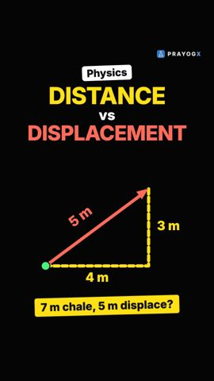
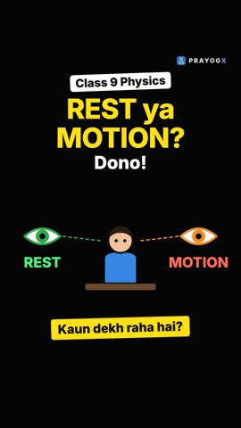
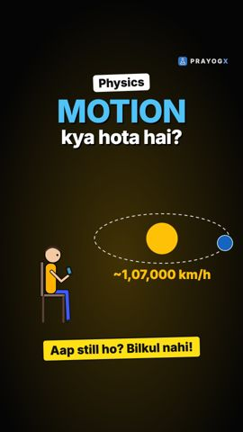
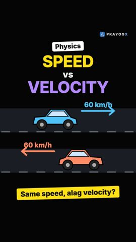
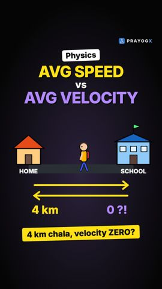

Chapter 7 · Physics
Position Needs an Origin and a Direction
Video not playing? Watch on Instagram · YouTube
"200 m" means nothing until you say from where and which way. Position is a signed number with a unit, measured from a chosen origin.
Download the short notesPDF, 139 KB · solved examples, practice set and answer key Download the workbook
PDF, 172 KB · fill in the blanks, true/false, assertion-reason, MCQ, numericals, short answer, match the columns; detailed solutions at the end That's all the videos in this chapter so far Back to Motion
Key points
- To give a position, first choose a reference point, the origin (O).
- Choose one direction as positive; positions on the other side are negative.
- Position = sign + number + unit, e.g. shop +200 m, school −150 m.
- Changing the origin changes every position, but not the displacement (final − initial position).
The running example
| Place | Origin: home | Origin: school |
|---|---|---|
| School | −150 m | 0 |
| Home | 0 | +150 m |
| Shop | +200 m | +350 m |
Displacement home → shop = 200 − 0 = 350 − 150 = +200 m
Rules
- Pick the origin and the positive direction, and state them.
- A negative position means "on the other side of the origin", not "less than nothing".
- Positions depend on the origin; displacements and distances do not.
Try it yourself
Goal: Move the origin and flip the direction, and find which numbers change and which stay the same.
- Predict what will change, then drag the red flag along the road.
- Put the origin at School and compare the table with the notes.
- Press Flip positive direction and compare the signs and sizes.
- Choose another trip and repeat.
Quick quiz
4 questions. Choose an answer for each, then submit to see your score and the explanations.
More from Motion

Distance vs DisplacementDistance counts the whole path you walked; displacement only looks at the straight line from start to end, with its direction.Physics · simulation
Rest and Motion: Motion is RelativeAre you moving right now? It depends on who is watching. Rest and motion are always measured from a reference point.Physics · simulation
Motion: Chapter IntroductionSitting still? With the Earth you are moving at about 1,500 km/h. Motion is a change of position with time, measured from a reference point, and this chapter gives the tools to describe it.Physics
Speed vs VelocityTwo cars at the same 60 km/h can have different velocities. Speed tells how fast; velocity also tells which way.Physics · simulation
Average Speed vs Average VelocityWalk 4 km to school and back in an hour: average speed 4 km/h, average velocity zero. One uses total distance, the other displacement.Physics · simulation